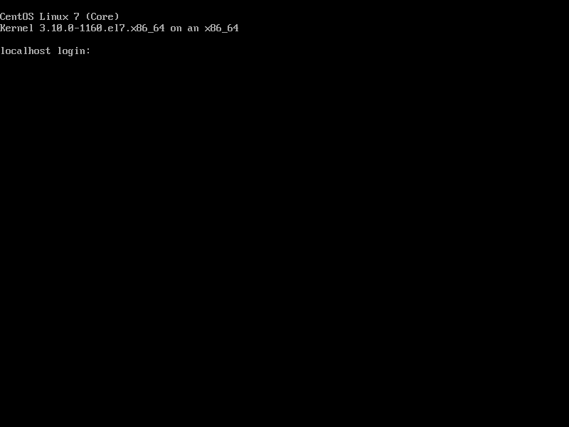
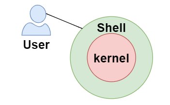

1. Linux文件系统目录结构
理解和熟悉Linux系统的文件系统目录结构，对于有效的管理和定位文件十分重要。Linux文件系统的目录结构如下图所示：
其中各目录的作用如下表所示
| 目录 | 说明 | 作用 |
|---|---|---|
| / | 根目录 | 根目录是整个文件系统的起点，所有其他目录和文件都位于根目录之下。 |
| /home | 家目录 | 每个用户的个人目录都位于这个目录下，通常以用户名命名。例如，用户john的主目录路径为/home/john。 |
| /root | root用户的家目录 | 保存root用户的个人数据 |
| /boot | 引导文件所在目录 | 保存系统启动时所需的各种文件 |
| /usr | User System Resources的简写，说法不唯一 | 存放用户可用的软件和程序文件，也包括了一些共享的数据和库文件。 |
| /bin | binary的简写 | 存放系统的基本命令（如ls、cp等）和其余可执行文件。 |
| /sbin | system binary的简写 | 存放系统管理和维护方面的二进制文件。 |
| /etc | etcetera的简写 | 存放系统的配置文件，包括各种程序的配置文件和系统的全局配置文件。 |
| /var | variable的简写 | 存放系统运行时产生的可变数据，如日志文件、数据库文件等。 |
| /opt | optional的简写 | 存放一些可选的软件包，通常由用户自行安装。 |
| /tmp | temporary的简写 | 存放临时文件，系统会定期清理该目录 |
2. Linux交互界面
服务器中Linux系统，通常不会安装图形用户界面（GUI，Graphical User Interface），因此我们与操作系统的交互主要靠命令行界面（CLI，Command Line Interface），如下图所示

在命令行界面，用户通过输入一些列命令来和操作系统进行交互，例如通过mkdir /test来创建/test目录。这些命令通常由shell解释并执行。

3. Linux常用命令
3.1 文件和目录相关
pwd（print working directory）
作用
打印当前目录的绝对路径
基本语法
pwd案例实操
显示当前工作目录的绝对路径
1
2[root@localhost ~]# pwd
/root
ls（list）
作用
列出目录内容
基本语法
ls [选项] [目录或是文件]选项说明
| 选项 | 功能 |
| —— | —————————————————————————————— |
| -a | 全部的文件，连同隐藏文件( 开头为 . 的文件) 一起列出来 |
| -l | 使用较长（详细）的格式列出信息，包含文件的属性与权限等等数据 |实操案例
查看当前目录的所有内容信息
1
2
3
4
5
6[atguigu@localhost ~]$ ls -al
总用量 44
drwx------. 5 atguigu atguigu 4096 5月 27 15:15 .
drwxr-xr-x. 3 root root 4096 5月 27 14:03 ..
drwxrwxrwx. 2 root root 4096 5月 27 14:14 hello
-rwxrw-r--. 1 atguigu atguigu 34 5月 27 14:20 test.txt显示说明
每行列出的信息依次是： 文件类型与权限 链接数 文件属主 文件属组 文件大小 最近修改时间 文件名
cd（change directory）
作用
切换路径
基本语法
cd [参数]参数说明
| 参数 | 功能 |
| —————- | ———————————— |
| cd 绝对路径 | 切换路径 |
| cd 相对路径 | 切换路径 |
| cd ~或者cd | 回到自己的家目录 |
| cd - | 回到上一次所在目录 |
| cd .. | 回到当前目录的上一级目录 |
mkdir（Make Directory）
作用
创建目录
基本语法
mkdir [选项] 要创建的目录选项说明
| 选项 | 功能 |
| —— | —————— |
| -p | 创建多层目录 |实操案例
- 创建一个目录
1
2
3[root@localhost ~]# mkdir hello
[root@localhost ~]# mkdir hello/world- 创建一个多级目录
1
[root@localhost ~]# mkdir -p big/world
cp（copy）
作用
复制文件或目录
基本语法
cp [选项] source dest选项说明
| 选项 | 功能 |
| —— | ————————— |
| -r | 递归复制整个文件夹 |参数说明
| 参数 | 功能 |
| ——— | ———— |
| source | 源文件 |
| dest | 目标文件 |实操案例
- 复制文件
1
[root@localhost ~]# cp ./initial-setup-ks.cfg ./hello
- 递归复制整个文件夹
1
[root@localhost ~]# cp -r ./big ./hello
rm（remove）
作用
移除文件或者目录
基本语法
rm [选项] deleteFile选项说明
| 选项 | 功能 |
| —— | —————————————- |
| -r | 递归删除目录所有内容 |
| -f | 强制删除,不提示用户进行确认 |实操案例
- 递归删除目录中所有内容
1
[root@localhost ~]# rm -rf ./big
mv（move）
作用
移动或重命名文件
基本语法
移动文件
1
mv 源文件 目标目录
重命名
1
mv 源文件 目标文件
案例实操
移动文件
1
2[root@localhost ~]# cd hello/
[root@localhost hello]# mv initial-setup-ks.cfg world/移动文件并重命名
1
[root@localhost world]# mv initial-setup-ks.cfg ../hello.cfg
重命名
1
[root@localhost hello]# mv hello.cfg initial-setup-ks.cfg
cat
作用
查看文件内容
基本语法
cat [选项] 文件选项说明
| 选项 | 功能描述 |
| —— | ————————————- |
| - n | 显示所有行的行号,包括空行 |实操案例
查看文件内容并显示行号
1
[atguigu@localhost ~]$ cat -n hello.cfg
tail
作用
输出文件尾部内容
基本语法
tail 文件（功能描述：查看文件后10行内容）tail -n 5 文件（功能描述：查看文件后5行内容，5可以是任意行数）tail -f 文件（功能描述：实时追踪该文档的所有更新）
选项说明
| 选项 | 功能 |
| ———— | —————————————————— |
| -n<行数> | 输出文件尾部n行内容 |
| -f | 显示文件最新追加的内容，监视文件变化 |实操案例
- 查看文件最后50行内容
1
[root@localhost ~]# tail -n 50 helle.cfg
- 实时追踪该档的所有更新
1
[root@localhost ~]# tail -f hello.cfg
3.2 文本编辑相关
在命令行界面下，最常用的文本编辑器就是Vi/Vim。其中Vi 是 Linux操作系统中最通用的文本编辑器。 Vim编辑器是Vi的增强版，相较于Vi，提供了代码高亮等功能。两者用法完全兼容。下面介绍Vim的用法。
基础语法
vim 文件Vim模式介绍
Vim文编辑器有不同的工作模式，在不同模式下，可执行不同的操作，主要模式有
- 普通模式（Normal Mode）：用于删除、复制、粘贴等基本操作。
- 编辑模式（Insert Mode）：用于编辑文本。
- 命令行模式（Command Mode）：用于执行命令，如保存、退出等。
下图为各模式之间的切换方法
下面分别介绍各模式下的用法
编辑模式
编辑模式下，可进行正常的编辑操作，可在编辑模式下和其他模式下灵活切换，提高编辑效率。
一般模式
在这个模式中， 可以使用上下左右按键来移动光标，也开通过一些简单的操作来复制粘贴以及删除文本，具体操作如下
光标操作
| 快捷键 | 操作 |
| —————— | ————— |
|shift+6(^)| 移动到行头 |
|shift+4($)| 移动到行尾 |
|shift+g| 移动到页尾 |
|gg| 移动到页头 |复制粘贴操作
| 快捷键 | 操作 |
| ——— | ——————— |
|yy| 复制光标当前行 |
|yw| 复制光标当前词 |
|p| 粘贴 |删除操作
| 快捷键 | 操作 |
| ———- | ———————————————- |
|dd| 删除光标当前行 |
|d n d| 删除当前光标所处行及其以下共n行 |
|x| 删除当前光标处的一个字符 |
命令模式
命令模式下可通过一些命令实现存盘、退出、显示行号、搜索、批量替换等功能，具体命令如下
| 命令 | 操作 |
| ——————— | ——————————————————————————— |
|:w| 保存 |
|:q| 退出 |
|:!| 强制执行 |
|:set nu| 显示行号 |
|:set nonu| 取消行号 |
|/文本| 搜索文本，输入n：光标指向下一个，输入N：贯标指向上一个 |
|:nohl| 搜索文本后，匹配内容会高亮显示，该命令可取消高亮 |
|:s/old/new/g| 在全局范围内使用new替换old内容 |
3.3 文件权限相关
3.3.1 文件权限概述
Linux中的所有文件均有严格的访问权限控制，只有当用户拥有某个文件的相关权限时，才可对文件执行相关操作。
权限系统相关概念
用户和用户组
在Linux系统中注册的个体称为一个用户，例如root和atguigu，除此之外还能使用
useradd <用户名>命令创建新的用户。每个用户都可以属于一个或多个用户组，可以使用groups <用户名>命令查看用户所属的组，使用usermod -g <新组名> <用户名>修改用户所属组。每个文件或者目录都有一个所属用户和一个所属组。
文件权限
在Linux中，文件和目录的权限主要分为三个部分：读（read）、写（write）和执行（execute）。
- 读权限，表示可以读取文件的内容或者查看目录的内容。
- 写权限，表示可以修改文件内容或者在目录中创建、删除文件。
- 执行权限，表示可以运行可执行文件或者进入目录。
权限字符串：
在Linux系统中，文件和目录的权限用一组字符来表示，通常以
rwxr-xr--的形式呈现，其中r、w、x分别表示读、写和执行权限。以下是权限字符的含义：第1-3位确定属主（该文件的所有者）拥有该文件的权限。
第4-6位确定属组（所有者的同组用户）拥有该文件的权限。
第7-9位确定其他用户拥有该文件的权限。
思考题
若某文件的权限字符串为rwxr-xr--，请分析该文件的权限策略。
3.3.2 常用命令
chmod（change mode）
作用
修改文件或目录权限
基本语法
chmod [选项] [u/g/o/a][+/-/=][r/w/x] 文件或目录- u：user
- g：group
- o：other
- a：all
chmod [选项] 777 文件或目录| 权限表示法 | user | group | other |
| ——————— | —— | ——- | ——- |
| 字符串 | rwx | r-x | rw- |
| 数字（二进制） | 111 | 101 | 110 |
| 数字（八进制） | 7 | 5 | 6 |
选项说明
| 选项 | 功能 |
| —— | ———— |
| -R | 递归操作 |实操案例
- 修改文件使其所属主用户具有执行权限
1
[root@localhost ~]# chmod u+x hello.cfg
- 修改文件使其所属组用户具有执行权限
1
[root@localhost ~]# chmod g+x hello.cfg
- 修改文件所属主用户执行权限,并使其他用户具有执行权限
1
[root@localhost ~]# chmod u-x,o+x hello.cfg
- 采用数字的方式，设置文件所有者、所属组、其他用户都具有可读可写可执行权限。
1
[root@localhost ~]# chmod 777 hello.txt
- 修改整个文件夹里面的所有文件的所有者、所属组、其他用户都具有可读写执行权限。
1
[root@localhost ~]# chmod -R 777 hello/
chown（change owner）
作用
改变文件或目录所有者
基本语法
chown [选项] 用户[:用户组] 文件或目录选项说明
| 选项 | 功能 |
| —— | ———— |
| -R | 递归操作 |实操案例
- 修改文件所有者
1
[root@localhost ~]# chown atguigu helle.cfg
- 递归改变文件所有者和所有组
1
[root@localhost ~]# chown -R atguigu:atguigu hello/
3.4 进程管理相关
操作系统中正在运行的一个程序称为一个进程。
查看进程
可以使用
ps（process status）命令查看操作系统中当前的进程。常见用法
ps aux选项说明如下
| 选项 | 功能 |
| —— | —————————————— |
| a | 显示所有前台进程 |
| u | 以用户友好的方式打印进程信息 |
| x | 显示后台进程 |ps aux显示内容如下1
2
3
4
5USER PID %CPU %MEM VSZ RSS TTY STAT START TIME COMMAND
root 1 0.0 0.1 193964 7048 ? Ss 08:56 0:01 /usr/lib/systemd/systemd
root 2 0.0 0.0 0 0 ? S 08:56 0:00 [kthreadd]
root 4 0.0 0.0 0 0 ? S< 08:56 0:00 [kworker/0:0H]
root 5 0.0 0.0 0 0 ? S 08:56 0:00 [kworker/u256:0]注：
- USER：启动该进程的用户
- PID：进程ID
- %CPU：该进程占用CPU资源的百分比
- %MEM：该进程占用物理内存的百分比
- COMMAND：产生此进程的命令名
ps -ef选项说明如下
| 选项 | 功能 |
| —— | ——————————————— |
| -e | 显示所有进程 |
| -f | 以完整的格式显示进程的详细信息 |ps -ef显示内容如下1
2
3
4
5
6
7UID PID PPID C STIME TTY TIME CMD
root 1 0 0 08:56 ? 00:00:01 /usr/lib/systemd/systemd
root 2 0 0 08:56 ? 00:00:00 [kthreadd]
root 4 2 0 08:56 ? 00:00:00 [kworker/0:0H]
root 5 2 0 08:56 ? 00:00:00 [kworker/u256:0]
root 6 2 0 08:56 ? 00:00:00 [ksoftirqd/0]
root 7 2 0 08:56 ? 00:00:00 [migration/0]注：
- UID：用户ID
- PID：进程ID
- PPID：父进程ID
- CMD：启动进程所用的命令和参数
使用技巧
日常查看进程时，通常会将上述命令与
grep命令配合使用，grep可用于过滤文本行。例如想查看所有的Java进程，便可执行以下命令
1
ps -ef | grep java
|符号称为管道符，其作用是将前边命令的输出作为下一命令的输入。
终止进程
若想停止进程，可使用
kill命令，其用法如下基本语法
kill [选项] 进程号选项说明
| 选项 | 功能 |
| —— | —————————— |
| -9 | 表示强迫进程立即停止 |案例实操，启动火狐浏览器，并杀死相关进程。
提示：火狐浏览器的英文名称为firefox。
3.5 压缩归档相关
zip/unzip
zip/unzip可用于压缩和解压缩zip文件，使用方式如下基本语法
zip [选项] XXX.zip 文件或路径unzip [选项] XXX.zip选项说明
| zip选项 | 功能 |
| ———- | ———— |
| -r | 压缩目录 || unzip选项 | 功能 |
| ————- | ———————————— |
| -d 目录 | 指定解压后文件的存放目录 |案例实操
压缩文件
创建两个文件
file1.txt和file2.txt，并将其压缩为first.zip1
2
3
4[root@localhost ~]# vim file1.txt
[root@localhost ~]# vim file2.txt
[root@localhost ~]# zip first.zip file1.txt file2.txt压缩目录
1
[root@lcoalhost ~]# zip -r hello.zip hello
解压
创建一个
zip目录，并将first.zip中的内容解压到zip目录1
2[root@lcoalhost ~]# mkdir zip
[root@lcoalhost ~]# unzip first.zip -d zip/
tar
tar可用于对文件进行归档（打包）和压缩，使用方式如下基本语法
打包：
tar [选项] -c -f 包名 文件1 文件2 文件3 ...解包：
tar [选项] -x -f 包名 -C 指定目录选项说明
| 选项 | 功能 | |
| ———- | ———————————————————— | —— |
| -c | 打包 | |
| -x | 解包 | |
| -z | 打包的同时进行压缩（解包的时候进行解压） | |
| -v | 打包或解包时显示正在处理的文件信息 | |
| -f 包名 | 指定打包后的文件名后者要解包的文件名 | |
| -C 目录 | 解包到指定目录 | |案例实操
打包
file1.txt和file2.txt到first.tar1
[root@lcoalhost ~]# tar -cvf first.tar file1.txt file2.txt
打包并压缩
file1.txt和file2.txt到first.tar.gz1
[root@lcoalhost ~]# tar -zcvf first.tar.gz file1.txt file2.txt
解包并解压
first.tar.gz到tar目录1
2[root@lcoalhost ~]# mkdir tar
[root@lcoalhost ~]# tar -zxvf first.tar.gz -C ./tar
3.6 安装应用相关
3.6.1 RPM离线安装
RPM概述
RPM（RedHat Package Manager），RedHat软件包管理工具，在基于 RedHat 的 Linux 发行版中广泛使用。常见软件包如下
Apache-1.3.23-11.i386.rpm，类似于Windows系统中的exe文件。rpm命令
可以使用
rpm命令安装、卸载和查看系统中的应用，具体用法如下安装
基本语法
rpm -ivh 软件包路径选项说明
| 选项 | 功能 |
| —— | ———————————— |
| -i | -i=install，安装 |
| -v | -v=verbose，显示详细信息 |
| -h | -h=hash，进度条 |案例实操
在以下地址下载一个sl软件的rpm安装包，并安装
下载地址：https://dl.fedoraproject.org/pub/epel/7/x86_64/Packages/s/sl-5.02-1.el7.x86_64.rpm
查看
基本语法
rpm -qa（功能描述：查询所安装的所有rpm软件包）选项说明
| 选项 | 功能 |
| —— | ———— |
| -q | 查询模式 |
| -a | 表示所有 |案例实操
查询刚刚安装的软件
1
[root@localhost ~]# rpm -qa | grep sl
卸载
基本语法
rpm -e 软件包名案例实操
卸载刚刚安装的sl软件
1
[root@localhost ~]# rpm -e sl-5.02-1.el7.x86_64
3.6.2 Yum在线安装
Yum概述
YUM（全称为 Yellowdog Updater Modified）是一个Linux软件包管理器。基于RPM包管理，能够从指定的服务器自动下载RPM包并且安装，并且可以自动处理依赖关系，并且一次安装所有依赖的软件包，无须繁琐地一次次下载、安装，该功能类似在JAVA中使用Maven工具从远程仓库中下载依赖一样,可以自动处理依赖关系。
yum命令
可以使用yum安装和卸载应用，具体用法如下
安装软件包
基本语法
yum [选项] install 软件包名选项说明
| 选项 | 功能 |
| —— | ——————————- |
| -y | 对所有提问都回答“yes” |案例实操
使用yum在线安装sl软件
查询sl软件的包名
可在如下网站搜索Linux中的各种软件包，地址为https://pkgs.org/，搜索sl，并查看对应的Linux发行版，搜索结果为`yum install sl`。
执行yum安装命令
执行
yum install sl后的结果为1
2没有可用软件包 sl。
错误：无须任何处理原因分析，yum的工作原理是从我们所配置的远程仓库下载rpm包，然后进行安装，远程仓库的配置文件位于
/etc/yum.repo.d/目录中。上述问题的原因就是sl软件的rpm包不在系统预先配置的这些远程仓库中。因此需要先配置sl所在的远程仓库，才可使用yum进行安装，具体操作如下。配置远程仓库
远程仓库可手动配置，也可在线配置，下面在线配置
1
[root@localhost ~]# yum -y install epel-release
完成后观察
/etc/yum.repo.d/目录下配置文件的变化。重新安装sl
1
[root@localhost ~]# yum -y install sl
卸载软件包
基本语法
yum remove 软件包名
案例实操
卸载sl软件
1
[root@localhost ~]# yum remove sl
4. Linux系统远程访问
多数情况下，工作时所用的服务器并不在身边，这些计算机要么位于机房，要么位于云端，因此我们不能向操作个人电脑一样操作服务器，而是需要通过远程登录的方式来操作。
4.1 SSH概述
SSH（Secure Shell）使用一种网络协议，用于在计算机之间建立加密的连接，从而允许用户以安全的方式在远程的计算机中执行命令。
4.2 SSH实操
Linux系统中都会预装SSH服务，因此我们只需在自己的个人电脑安装SSH客户端，然后配置连接即可。可以选择的SSH客户端有很多，目前，比较主流的有 Xshell, SecureCRT，FinalShell，MobaXterm 等，同学们可以根据自己的习惯自行选择。本课程使用MobaXterm，下面演示具体使用方式。
在Windows主机安装MobaXterm软件，安装包位于项目资料中。
查询虚拟机IP地址
使用
ifconfig（network interfaces configuring）命令可查看虚拟机ip地址，其输出内容如下1
2
3
4
5
6
7
8
9
10
11
12
13
14
15
16
17
18
19
20
21
22
23
24
25ens33: flags=4163<UP,BROADCAST,RUNNING,MULTICAST> mtu 1500
inet 172.17.0.104 netmask 255.255.255.0 broadcast 172.17.0.255
inet6 fe80::5fdd:f01e:a4fb:966 prefixlen 64 scopeid 0x20<link>
ether 00:0c:29:fc:a3:fe txqueuelen 1000 (Ethernet)
RX packets 183030 bytes 70503744 (67.2 MiB)
RX errors 0 dropped 78 overruns 0 frame 0
TX packets 23385 bytes 1917128 (1.8 MiB)
TX errors 0 dropped 0 overruns 0 carrier 0 collisions 0
lo: flags=73<UP,LOOPBACK,RUNNING> mtu 65536
inet 127.0.0.1 netmask 255.0.0.0
inet6 ::1 prefixlen 128 scopeid 0x10<host>
loop txqueuelen 1000 (Local Loopback)
RX packets 0 bytes 0 (0.0 B)
RX errors 0 dropped 0 overruns 0 frame 0
TX packets 0 bytes 0 (0.0 B)
TX errors 0 dropped 0 overruns 0 carrier 0 collisions 0
virbr0: flags=4099<UP,BROADCAST,MULTICAST> mtu 1500
inet 192.168.122.1 netmask 255.255.255.0 broadcast 192.168.122.255
ether 52:54:00:ea:8a:fb txqueuelen 1000 (Ethernet)
RX packets 0 bytes 0 (0.0 B)
RX errors 0 dropped 0 overruns 0 frame 0
TX packets 0 bytes 0 (0.0 B)
TX errors 0 dropped 0 overruns 0 carrier 0 collisions 0其中
ens33，为虚拟机的以太网络接口，此处获取的ip地址为172.17.0.104。在MobaXterm中配置SSH（Secure Shell）连接
点击Session选项
点击SSH选项，并配置连接信息
输入root用户密码
远程登录成功，如下图所示